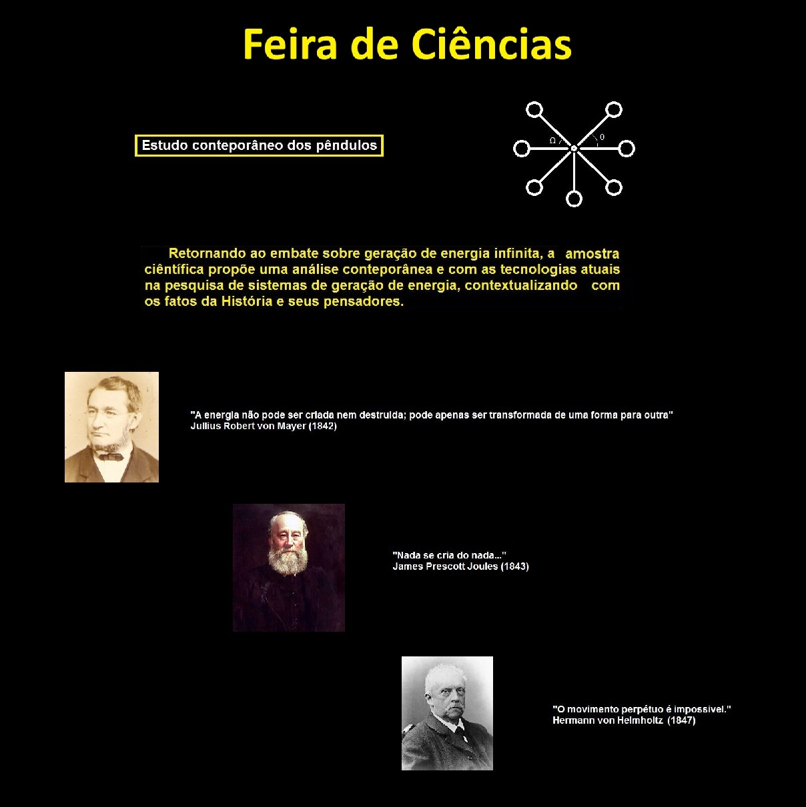

Análise física, matemática e energética do mecanismo

Introdução
A busca pelo movimento perpétuo e pela geração ilimitada de energia transcendeu séculos de história da ciência, saltando dos aparatos conceituais do século XIX para o ecossistema digital contemporâneo, onde a proliferação de vídeos virais e fake physics frequentemente distorce leis fundamentais da natureza em troca de engajamento.
Este trabalho contrapõe a desinformação científica e oferece uma ferramenta físico-didática para investigação da possibilidade de criação de um motor-perpétuo, permitindo coletas de dados e pesquisas com tecnologias atuais para a solução do problema. Por meio de uma análise experimental e rigorosa do comportamento de queda de pesos em pêndulo acoplados à geradores, apresenta as equações correspondentes à dinâmica do experimento utilizando o método científico para quantificar o rendimento energético real de um sistema mecânico, ao passo que contextualiza com as razões históricas da impossibilidade do movimento perpétuo.
Trata-se, portanto, de uma investigação prática que não apenas reafirma a beleza e a firmeza da física clássica, mas se consolida como uma ferramenta pedagógica viva no combate às pseudociências da era digital. Permitindo que verdadeiros estudantes busquem soluções reais através de ferramentas reais.